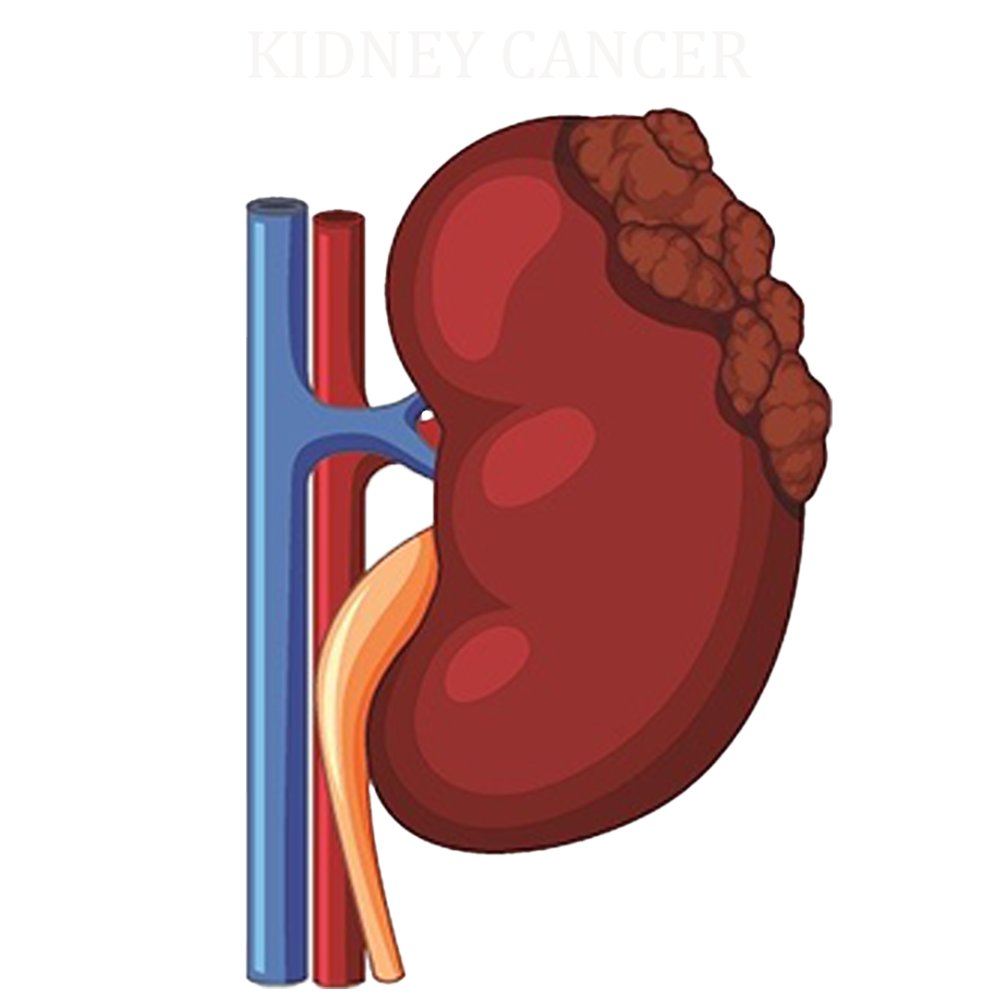

What is the relationship between kidney cancer and degenerative diseases?
- Home
- About
1. Kidney cancer is part of the non-communicable (degenerative) disease group.
Degenerative diseases are usually chronic diseases that develop slowly and are associated with the aging process as well as the deterioration of body functions.
According to the World Health Organization, cancer is one of the non-communicable diseases (NCDs) or chronic diseases, along with diabetes, heart disease, and chronic lung disease.
➡️ Therefore, kidney cancer can be categorized as a degenerative disease because:
a. it is not contagious
b. it develops slowly
c. it often appears with increasing age
d. it is related to long-term changes in body cells
🧬 2. Risk factors are the same as other degenerative diseases
Many risk factors for kidney cancer are the same as for other degenerative diseases, for example:
a. old age
b. obesity
c. hypertension
d. smoking
e. unhealthy lifestyle
🧪3. Degenerative process = long-term cell damage
In degenerative diseases, the following occurs:
a. Decreased organ function
b. Gradual cell damage
c. Changes in DNA or metabolism
In kidney cancer, kidney cells undergo DNA changes, causing them to grow abnormally and form tumors.
➡️ Meaning: long-term degenerative processes can facilitate the development of cancer.
🧠4. Other degenerative diseases can increase the risk of kidney cancer.
For example:
a. chronic hypertension
b. chronic kidney disease
c. obesity and diabetes
These conditions often persist for a long time and cause continuous stress on kidney tissue, thereby increasing the risk of cancer.
factors that can increase the risk of developing kidney cancer:
such as cleaning chemicals for equipment (trichloroethylene)
- Floor 1
- Floor 2
-

-

The treatment methods
that can be performed by doctors are:
Surgery
Common types of kidney cancer surgery include:
1. Partial nephrectomy, to remove a specific part of the kidney affected by cancer
2. Radical nephrectomy, to remove the entire kidney containing cancer cells
Ablation therapy
There are two methods that can be used in ablation therapy, namely:
1. Cryotherapy, which is a procedure to freeze and destroy cancer cells using liquid nitrogen
2. Radiofrequency ablation, which is a therapy performed using high-energy sound waves to destroy tumors
Radiotherapy
Radiotherapy is cancer treatment using high-dose X-rays. In kidney cancer, radiation is directed from outside the body to slow its spread and relieve symptoms. Side effects can include fatigue, diarrhea, and skin changes.
Targeted therapy
The drugs administered in this therapy are:
1. Sunitinib
2. Pazopanib
3. Sorafenib
4. Everolimus and temsirolimus